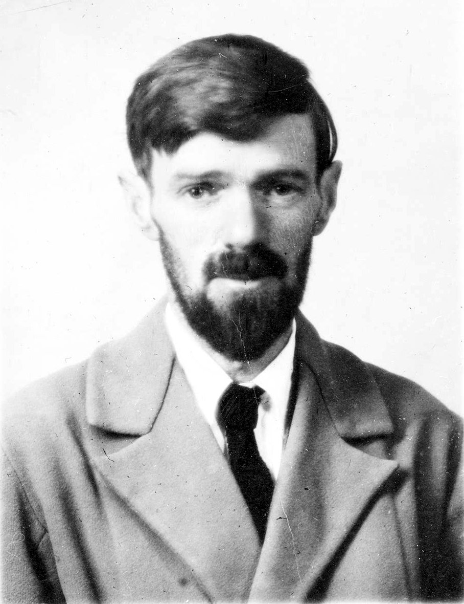
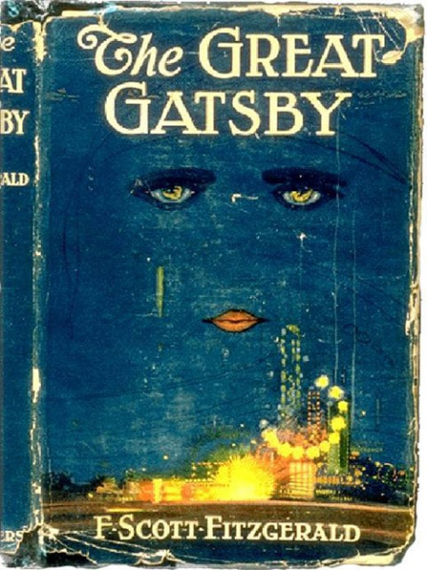
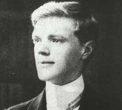

Selected writing.

A corpus-driven investigation of nominalisation in D. H. Lawrence's literary style — using corpus stylistics to show that the suffix –ness is a measurable part of Lawrence's literary fingerprint, and that his coinages in –ness mark the exact spots where his prose reaches for a feeling language doesn't already have a word for.

Corpus stylistic insights into narration and 'keyness' in The Great Gatsby — using key-word and concordance analysis to show that Fitzgerald's most 'literary' words (twilight, trembling, enchanted) cluster in exactly the passages where Nick Carraway's narration stops reporting the party and starts becoming it.

A corpus stylistic study of Lawrence's attempt to build "a language for the feelings" in Sons and Lovers and 'New Eve and Old Adam' — using Wmatrix semantic tagging and Wordsmith key-word analysis to show that 'Anatomy and Physiology' is statistically overwhelming (Log-Likelihood 2491.06), and that Lawrence's characters don't feel emotion so much as undergo it: eyes contract, shoulders turn proud, faces lower gloomily, while the feeling self all but disappears from the grammar.
New essays and notes will be published here. Topics will span epistemic infrastructure, deliberative systems, platform power, and the political economy of knowledge.
← Back to home